Fortinet Enterprise Networking & Security · Documentation-led engineering report
Daily Fortinet Study Report — November 13, 2026
Run 08:54 PST · 12 mandatory product areas · 50 graded questions
Run Status — PARTIAL
Published to GitHub. The rolling 30-day historical inventory was built before topic selection. Twelve substantive lessons and the 50-question exam are complete. Twelve standalone SVG diagrams and twelve editable draw.io diagrams were independently fetched from GitHub and passed structural checks.
Research limitations: 11 of 12 representative Fortinet Document Library page opens returned HTTP 403. Official indexed guide content and Fortinet-hosted PDFs were used for the blocked sources; the FortiSASE bandwidth-control guide was directly readable. One directly matched recent Community scenario was verified for FortiPAM and is used only as scenario evidence. The other eleven selected mechanisms have no directly matched recent Community scenario verified in this sweep.
Outstanding: public GitHub Pages reachability verification and direct review of the eleven blocked documentation pages. Email was not attempted because it is disabled. The report and all 24 diagram assets are published regardless of these downstream limitations.
30-day discovery and semantic exclusion
Before lesson generation, the published Fortinet reports and status artifacts from October 14 through November 13 were inspected from the repository. The inventory contains 282 historical lesson/candidate records and 27 actual report/status artifacts. Each candidate was compared across feature mechanism, workflow, failure class, evidence pattern, remediation, question fingerprint and diagram topology. All twelve selected topics passed semantic review. A new URL or title was not accepted as proof of novelty.
Machine-readable exclusion inventory · Selected fingerprints · Community sweep · Admin-guide sweep
Lesson map
- FortiGate — Software-switch 802.1X, MAB, dynamic VLANs and RADIUS group-address objects
- FortiManager — Per-device FortiSwitch template overrides: shared baseline, port exceptions and revert scope
- FortiAnalyzer — Custom administrator session labels: changeable versus unique-per-session audit context
- FortiSwitch — OSPF on routed VLAN interfaces: reference bandwidth, cost consistency and network-type election
- FortiAP/Wireless — FortiAP Layer 3 ACLs with FQDN and wildcard source/destination matching
- FortiNAC — Local RADIUS authentication versus proxy mode: EAP methods, MAC auth and accounting boundary
- FortiNAC-F — CentOS FortiNAC to FortiNAC-OS migration: topology selection, entitlement transfer and port hardening
- FortiAuthenticator — FSSO filtering of Windows AD computer accounts: object lookup, not suffix-only filtering
- FortiPAM — FortiPAM configuration backup/restore: encrypted credentials, omitted logs and cross-platform migration boundary
- FortiSIEM — Windows Agent native XML transfer: Collector parsing and custom-parser migration
- FortiSASE — Bandwidth control on IPsec agent tunnels: policy matching, shared/per-IP profiles and policing
- Secure SD-WAN — Underlay-bandwidth steering: inbandwidth, outbandwidth and bibandwidth load balancing
Software-switch 802.1X, MAB, dynamic VLANs and RADIUS group-address objects
Primary Fortinet source: https://docs.fortinet.com/document/fortigate/8.0.0/new-features/733615 · Supporting guide/release source
Purpose and forwarding boundary
FortiOS 8.0 extends port-based identity control to a FortiGate software switch. The software switch remains a logical Layer-2 bridge over its member interfaces, but it can authenticate attached endpoints with 802.1X, fall back to MAC Authentication Bypass (MAB), assign a VLAN dynamically, and expose the authenticated identity as a dynamic firewall address. This is useful when several access ports or AP Ethernet downlinks share one logical bridge but still require different policy treatment.
The critical design choice is intra-switch-policy explicit. With implicit intra-switch behavior, traffic between bridge members is permitted as Layer-2 switching traffic. Explicit mode makes member-to-member traffic pass through firewall policy and the session table. That creates a policy enforcement point for east-west traffic; it is not merely a cosmetic switch setting.
Authentication and policy transaction
A supplicant first attempts 802.1X EAP authentication through the software-switch interface to the configured RADIUS user group. If the endpoint cannot perform 802.1X and MAB is enabled, FortiGate can submit the endpoint MAC identity as the alternate authentication path. RADIUS returns the authorization result and, for group-based segmentation, a Fortinet-Group-Name vendor attribute. FortiOS 8.0 adds an IPv4/IPv6 firewall-address subtype of 8021x. The address-object name must match the returned Fortinet-Group-Name value. FortiGate then binds the authenticated endpoint MAC, interface and assigned VLAN to the matching dynamic address object. A firewall policy can use that object as its source address, allowing two endpoints in one VLAN to receive different policy treatment.
Configuration shape
The software-switch interface must use physical member interfaces. Configure security-mode 802.1X, security-mac-auth-bypass enable, the RADIUS user group, and security-8021x-mode dynamic-vlan where dynamic VLAN assignment is required. Configure intra-switch-policy explicit so intra-switch traffic is policy-controlled. The exact feature settings belong on the software-switch interface, not on an unrelated routed VLAN interface. The RADIUS policy must return the intended VLAN authorization and Fortinet-Group-Name value.
Evidence and troubleshooting
diagnose sys 802-1x-addr and diagnose sys 802-1x-addr dump expose the authenticated-address table. A populated entry with interface, MAC, account identity and VLAN ID proves that the RADIUS attribute was mapped to a dynamic address object. It does not prove that the intended firewall policy matched or that the endpoint can reach an application. Check policy order, source address, destination, service and session evidence separately.If authentication succeeds but member-to-member traffic still bypasses policy, inspect intra-switch-policy before rewriting firewall rules. If the dynamic address is absent, compare the exact RADIUS Fortinet-Group-Name value with the address-object name and inspect the 802.1X address table. If the object exists but traffic is denied, move to firewall policy matching and session evidence. A successful Access-Accept is not the same as an allowed application session.
Mechanism diagram
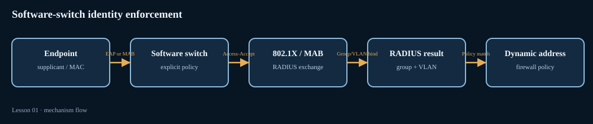

Per-device FortiSwitch template overrides: shared baseline, port exceptions and revert scope
Primary Fortinet source: https://docs.fortinet.com/document/fortimanager/8.0.0/new-features/197853/fortiswitch-template-adds-override-option-to-modify-specific-port-settings-on-selected-devices · Supporting guide/release source
Why the override layer exists
FortiManager 8.0 adds a per-device override option to FortiSwitch templates. A template expresses a common port configuration once and assigns that baseline to multiple managed switches. Real access networks are rarely uniform: one switch may have a server uplink, another may have an AP, and a third may have a locally constrained port. Editing the shared template to accommodate one exception changes the baseline for every device assigned to it. The override layer retains the shared template while changing selected settings for one switch.
Think of the effective configuration as two layers. The assigned template supplies common port values; a device-specific override records selected deviations for that switch. It is not a second independent template and it is not a blanket exemption from template management. It is a controlled exception attached to a device that still references the common template.
Configuration transaction
Create the FortiSwitch template and assign it to the target device. In FortiSwitch Manager, select the switch in Managed FortiSwitches and choose More > Assign Template > Configure Override. Confirm that the intended template is assigned, then enable Enable Override. FortiManager opens the template for editing in the context of that device. Hover over a cell and use its edit control, or right-click a port and choose Edit, to change only the required port settings. Save the device override. Edited cells receive a tooltip marker, and the device's Template column displays a tooltip icon to signal that an override exists.
That marker is operationally important. Without it, an engineer reviewing a switch may assume every port is still governed entirely by the shared baseline. When a port behaves differently from its peers, check the override marker before editing the common template. Compare the template baseline with the device-specific effective value, not just the template name shown in the device list.
Revert semantics and safe operations
FortiManager documents two different revert scopes. While editing a port, Revert All discards customizations for that specific port. Disabling override mode for the device is broader: FortiManager warns that disabling it will revert all customized values for that device. Do not use the device-level toggle when the intent is to reset one port. Conversely, reverting one port does not imply that every other device-specific exception has been removed.
A disciplined workflow is to record why the exception exists, identify the physical port and setting, compare it with the shared template, then use the narrowest revert action that matches the change request. After editing, review the target-specific configuration and install preview before deploying. A successful GUI save proves that an override is stored; it does not prove that the switch has received the intended runtime configuration.
Operational troubleshooting
If one FortiSwitch differs from other devices assigned to the same template, inspect the device's override marker and edited-cell tooltip. If the port should return to baseline, use the port-level Revert All action. If the entire device should again inherit the template, disable override mode only after reviewing the warning and confirming that all device customizations may be discarded. If the switch still differs after deployment, compare FortiManager's intended target configuration with the switch's operational port state.
Mechanism diagram
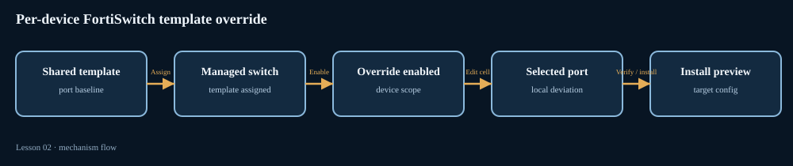

Custom administrator session labels: changeable versus unique-per-session audit context
Primary Fortinet source: https://docs.fortinet.com/document/fortianalyzer/8.0.0/administration-guide/814906/using-custom-session-labels-to-identify-sessions-in-the-event-log · Supporting guide/release source
Purpose: make an administrator session searchable
FortiAnalyzer 8.0 can require an administrator to attach a custom label to a GUI login session. Every action performed by that administrator during the session is tagged with the label in the Event Log. The intended use is forensic reconstruction: during a maintenance window or incident response, the label gives reviewers a human-readable handle for the sequence of administrative operations. It supplements the administrator identity and timestamp; it does not replace them.
The feature is disabled by default. Once enabled, a label is mandatory at login. Labels can be up to 36 characters. An administrator can use different labels for multiple concurrent logins, which helps distinguish a browser session used for a change from another session used for monitoring. FortiAnalyzer does not enforce global label uniqueness, so two administrators or sessions can use the same string.
Configuration and session lifecycle
Enable the feature and choose the mode in the FortiAnalyzer CLI:
config system admin setting
set custom-session-label enable
set custom-session-label-mode {changeable | unique-per-session}
endIn changeable mode, the administrator can edit the label while the session remains active. In unique-per-session mode, once the label is set it cannot be changed until the session terminates. “Unique” here means immutable for that session, not globally unique across the appliance. The system preserves a session's label in the immutable mode, but it does not prevent another session from using the same label.
After the setting is enabled, a Set Custom Session Label dialog appears after successful login. Active labels can be reviewed in the Dashboard's Current Session List. To audit completed actions, go to System Settings > Event Logs and inspect the Custom Session ID column. The label is associated with events generated by that session, allowing a reviewer to filter and reconstruct a change sequence.
How to use the evidence
For a change window, choose a short ticket or change identifier, such as CHG-48219-FW-ROUTE, and use it consistently across the operator's session. Pair the label with the administrator username, event timestamp and operation details. Because labels are not globally unique, the label alone is not a safe primary key for an audit export. A duplicate label does not mean the events belong to the same browser session.
The Current Session List proves which label is currently associated with an active login. The Event Log Custom Session ID column proves that an event carries a label. Neither proves that the change was approved, that the action succeeded on a managed device, or that resulting network behavior is correct. Approval and deployment evidence remain separate records.
Troubleshooting and operating caveats
If the login prompt does not appear, confirm that custom session labels are enabled in the global admin setting and that the administrator is starting a new session. If labels appear in the Current Session List but are absent from expected event records, check the event time range and confirm that the operation generated an Event Log entry. If an operator needs to correct a label mid-change, use changeable mode; if the label must remain fixed for the whole session, use unique-per-session mode. Before enabling the feature for all administrators, communicate that a label is mandatory and standardize naming so audit records remain meaningful.
Mechanism diagram
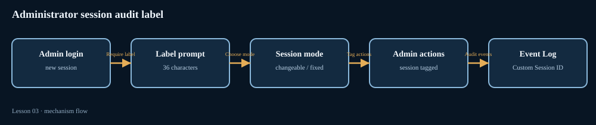

OSPF on routed VLAN interfaces: reference bandwidth, cost consistency and network-type election
Primary Fortinet source: https://docs.fortinet.com/document/fortiswitch/8.0.0/fortiswitchos-administration-guide/865768/ospf · Supporting guide/release source
What changes in FortiSwitchOS 8.0
FortiSwitchOS 8.0 expands OSPF control for routed VLAN interfaces (RVIs) in two important ways. Administrators can set the OSPF reference bandwidth used to derive interface cost, and they can select the OSPF network type for an interface. These settings influence path preference and adjacency behavior; they should be designed consistently across the routing domain rather than treated as isolated interface cosmetics.
By default, Ethernet OSPF interfaces use broadcast network type. Broadcast networks perform designated router (DR) and backup designated router (BDR) elections. FortiSwitchOS 8.0 allows point-to-point and point-to-multipoint as alternatives. For either alternative, no DR/BDR election occurs, simplifying the adjacency process and reducing protocol work on that segment. Select the type that reflects the actual topology. A two-router transit is a natural point-to-point case; a multipoint topology should not be mislabeled merely to suppress an election.
Reference bandwidth and cost
OSPF cost is derived from reference bandwidth divided by interface bandwidth. FortiSwitchOS uses a default reference bandwidth of 100 megabits per second. When the ratio is below one, the cost is set to one. This default can make faster links collapse to the same minimum cost, removing differentiation an engineer may expect between high-speed links. FortiSwitchOS 8.0 permits a reference bandwidth from 1 to 4,294,967. The setting supports both IPv4 and IPv6 OSPF.
Example IPv4 configuration:
config router ospf
set auto-cost-ref-bandwidth 5000
endFor IPv6, configure the corresponding value under config router ospf6. The Fortinet guide requires the reference bandwidth to be identical on all routers in the OSPF domain. If one router uses 100 Mbps and another uses 5,000 Mbps, the same physical link can be assigned different costs at opposite ends. The result is inconsistent path preference and harder-to-explain routing behavior.
Network-type configuration
Under config router ospf, configure the interface network-type as broadcast, point-to-point or point-to-multipoint. The same choices are available under config router ospf6. The configured OSPF interface name must refer to the intended RVI/OSPF interface; verify the interface-to-VLAN relationship before changing it.
Evidence and failure isolation
When a neighbor fails to reach FULL after a network-type change, compare the configured network type at both ends and confirm that the topology matches the selected type. A point-to-point design avoids DR/BDR election; it does not remove the need for compatible OSPF parameters, IP reachability or working link state. When a route unexpectedly prefers a slower path, compare reference-bandwidth values across the OSPF domain and examine derived costs rather than changing interface bandwidth estimates blindly.
Do not confuse adjacency formation with route preference. Network type controls the segment's OSPF relationship and election behavior; reference bandwidth controls cost calculation. A neighbor in FULL state proves adjacency, not that the intended route is best. A route table entry proves the selected route, not that all routers are calculating cost from the same reference. Validate both control-plane stages after a change.
Mechanism diagram
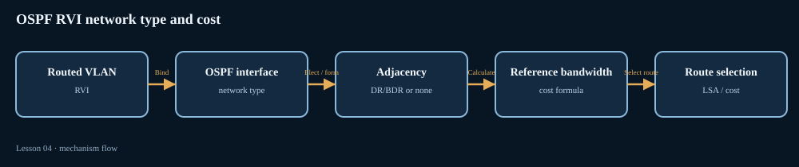

FortiAP Layer 3 ACLs with FQDN and wildcard source/destination matching
Primary Fortinet source: https://docs.fortinet.com/document/fortigate/8.0.0/new-features/648731/support-fqdn-in-layer-3-acls · Supporting guide/release source
Why name-based matching matters on the AP
FortiAP 8.0 adds FQDN support to Layer 3 access control lists in the AP's L3 Firewall Profile. Both source and destination addresses can be specified as fully qualified domain names, and simple wildcard matching is supported. This is useful when a wireless policy must follow a service name whose address can change, or when a profile needs a narrow exception for a domain family without maintaining a static IP list.
The feature is part of the FortiAP protection-profile path. It is not the same as a FortiGate IPv4/IPv6 firewall address object or central firewall policy. The AP's L3 Firewall Profile is where the rule is created, and the AP applies that profile to wireless traffic. Keep the enforcement point clear when troubleshooting: a FortiGate policy log and an AP L3 ACL decision are different pieces of evidence.
Configuration sequence
First, enable Advanced Wireless Features under System > Feature Visibility. Then open WiFi & Switch Controller > Protection Profiles, create or edit an L3 Firewall Profile, and add an IPv4 or IPv6 rule. For either Source address or Destination address, choose FQDN as the address type and enter the name. The documented example permits traffic to maps.google.com while blocking traffic to *google.com. The wildcard is a simple pattern, not a full regular-expression engine; do not assume complex glob or regex syntax is accepted.
Rule order matters whenever a narrow FQDN and a broad wildcard can both match the same request. Put the intended specific exception before the broader match and test both a host that should be allowed and one that should be blocked. Because the feature supports IPv4 and IPv6 rules, check the address family actually used by the client. An IPv6 client will not necessarily exercise the IPv4 rule you inspected.
What to verify
Start with the effective L3 Firewall Profile and confirm it is associated with the intended wireless service. Confirm the rule is enabled, the source/destination direction is correct, and the address type is FQDN rather than a literal IP. Then test a known hostname and a known non-matching hostname from a client on that SSID. If DNS answers change, verify observed behavior after the AP's name-to-address state has converged; the indexed feature description does not specify a DNS refresh timer, so do not promise immediate enforcement after a DNS change.
A reproducible allow/block result demonstrates that the profile is being exercised. It does not prove that the FortiGate's upstream firewall policy agrees with the AP ACL. If the client can reach the gateway but not a named service, determine which enforcement point dropped traffic before changing both policies at once.
Common mistakes
Enabling the feature without enabling Advanced Wireless Features leaves the expected GUI control unavailable. Using *google.com as if it were a complex regex can produce surprising matches. Editing a FortiGate firewall address object instead of the AP L3 profile changes the wrong policy layer. Finally, a hostname resolving to several addresses does not mean every address family is covered; test the actual A/AAAA path used by the endpoint.
Mechanism diagram
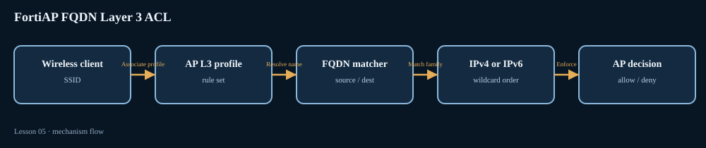

Local RADIUS authentication versus proxy mode: EAP methods, MAC auth and accounting boundary
Primary Fortinet source: https://docs.fortinet.com/document/fortinac/9.4.0/administration-guide/214558/radius · Supporting guide/release source
Two authentication paths, not one server setting
FortiNAC 9.4 documents two RADIUS authentication modes: external RADIUS proxy processing and the built-in Local RADIUS server. Local RADIUS was introduced in FortiNAC 8.8 and is disabled by default. When enabled, FortiNAC can process RADIUS MAC authentication and 802.1X EAP authentication locally instead of proxying those authentication requests to an external RADIUS server. This is useful when FortiNAC is intended to make the authentication decision itself, rather than merely forwarding a request to another AAA platform.
Supported EAP methods listed in the guide are TTLS/PAP, TTLS/MSCHAPv2, PEAP/MSCHAPv2 and TLS. The method selected by the supplicant and NAS must be compatible with local RADIUS configuration and certificate trust. Enabling Local RADIUS does not automatically make every EAP method usable: the server-side method, client supplicant profile and certificate chain still have to agree.
Authentication and accounting are separate transactions
For local authentication, the NAS sends an Access-Request to FortiNAC. FortiNAC evaluates the local RADIUS path and returns Access-Accept or Access-Reject. The important boundary is accounting: FortiNAC Local RADIUS does not provide accounting. If accounting records are required by another system, FortiNAC can be configured to proxy Accounting traffic to an external RADIUS server. Authentication can therefore be local while accounting remains external.
This separation prevents a common design error: assuming that a successful local Access-Accept also means accounting records are being stored or forwarded. Authentication determines whether the endpoint can proceed. Accounting records session start, stop and interim activity for systems that need usage, audit or session correlation. Validate both paths when the network design requires both.
Configuration constraints
Local RADIUS is disabled by default. When configuring both Proxy and Local RADIUS authentication modes, the authentication port numbers must be different between the services. A port collision can make the intended listener unavailable or send requests to the wrong service. Plan listener addresses and ports before enabling both modes, and document which NAS clients should use local processing versus proxy processing.
Use the RADIUS section of the Administration Guide to review the selected authentication mode and local RADIUS server settings. Confirm that the NAS points to the intended FortiNAC listener, the shared secret is correct, and the EAP method and certificate trust are compatible. If a request is proxied, inspect the proxy server profile and external RADIUS response; if it is local, inspect FortiNAC's local authentication path instead. Do not debug the external server first when the request never leaves FortiNAC.
Evidence and troubleshooting
A local Access-Accept proves that the authentication exchange succeeded; it does not prove that accounting is configured. An accounting packet at the external RADIUS server proves that the accounting proxy path is active; it does not prove that every authentication request used that same server. If users authenticate but no accounting records appear, check whether the design intentionally uses Local RADIUS and whether accounting proxying is enabled. If requests time out after enabling both modes, verify distinct authentication ports and the NAS destination. If EAP fails, isolate the EAP method, certificate trust and local-versus-proxy path before changing network access policy.
Mechanism diagram
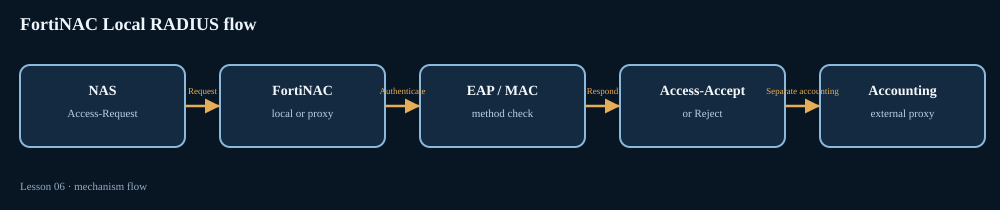

CentOS FortiNAC to FortiNAC-OS migration: topology selection, entitlement transfer and port hardening
Primary Fortinet source: https://docs.fortinet.com/document/fortinac-f/7.6.0/single-appliance-ca-servers/836940/overview · Supporting guide/release source · Community scenario (scenario evidence only)
Select the migration guide by deployment topology
FortiNAC-F 7.6 uses FortiNAC-OS and no longer supports legacy FortiNAC appliances running CentOS. The migration is not a generic configuration restore. Fortinet publishes different procedures for a single CA appliance, separate Control and Application servers, Manager-managed environments, and HA environments. Selecting the wrong guide is a design error because roles, registration, license handling and cutover sequence differ. The single-appliance guide explicitly says not to use it for a non-single CA topology; use the matching Manager, separate C+A or HA guide instead.
The purpose of the migration procedure is to move the existing configuration and endpoint-license entitlements to new FortiNAC-F appliances. The guide separates preparation from the maintenance-window cutover. Preparation stages include new appliance product registration, preparing endpoint licenses, installing the new appliance, generating license keys, configuring the new appliance, compiling allowed serial numbers and applying entitlements. The remaining collect/transfer and cutover steps are performed during the planned maintenance window.
License and version dependencies
License support type changes the entitlement workflow. For perpetual endpoint licenses, Customer Service transfers entitlements from the old serial number to the new serial number. Subscription licenses, or a combined subscription-plus-perpetual arrangement, cannot be transferred by Customer Service in the same way; the guide requires a new endpoint license for the new serial number. Verify the support type in the FortiCare Customer Portal before scheduling the migration. A configuration file alone does not move a license entitlement.
The new FortiNAC-F appliance must run a compatible FortiNAC-OS release, and the migration tool used to collect/transfer data must pass the version check during cutover. If the migration tool version does not match the target FortiNAC-OS version, cutover can fail. Some source/target release combinations also require importing key certificates or obtaining new license keys before migration. Review the preparation checklist and release notes for the exact source version; do not assume the newest appliance image can ingest every older bundle without preparation.
Addressing and service exposure
After a successful cutover, the FortiNAC-F appliance inherits the original IP addresses. If the new deployment needs different IP addressing, the guide says to make that change after migration completes. Changing addressing during the migration transaction can invalidate assumptions used by cutover and management reachability. FortiNAC-OS also starts with more restrictive default service exposure than the legacy CentOS appliance. Only ports needed by enabled features should be opened with the appropriate set allowaccess configuration. The guide recommends keeping open ports to a minimum and blocking the rest.
Operational evidence and rollback thinking
Before cutover, verify the topology guide, source and target versions, serial numbers, entitlement support type, certificate prerequisites, management reachability and maintenance window. After cutover, confirm expected hostname/IP, licensing, endpoint count, CA/Manager relationships, HA state where applicable, and service ports required by RADIUS, SNMP, agent communication or other enabled integrations. A dashboard showing the new appliance online proves reachability; it does not prove all endpoint entitlements or integrations transferred correctly.
A Community troubleshooting tip describes a mixed CentOS Manager/FortiNAC-OS managed-server issue when the Manager Admin UI is accessed as root. Treat it as a scenario-specific compatibility warning, not as a replacement for the official migration guide. The safe approach is to migrate Manager and managed servers according to documented topology and version requirements, then validate synchronization under the supported administrative account and service configuration.
Mechanism diagram
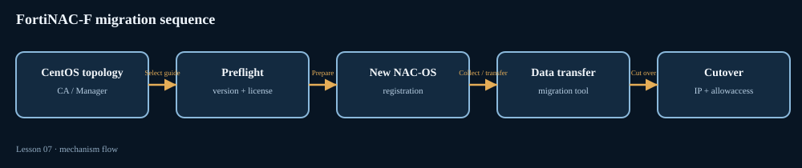

FSSO filtering of Windows AD computer accounts: object lookup, not suffix-only filtering
Primary Fortinet source: https://docs.fortinet.com/document/fortiauthenticator/6.6.7/release-notes/568509 · Supporting guide/release source
Identity mapping problem
FortiAuthenticator 6.6.7 adds an option to exclude Windows Active Directory computer accounts from Fortinet Single Sign-On (FSSO). In Windows domains, computer accounts commonly end with a dollar sign. If a computer account is treated as a user identity and propagated into FSSO, downstream identity-based firewall policy can associate a machine session with the wrong user context. That can create confusing user-to-IP mappings or apply user-group policy to a machine account.
The feature is available under Fortinet SSO > Settings > Methods. When Exclude Windows AD computer accounts from SSO is enabled, FortiAuthenticator performs an AD lookup to determine whether an account ending with $ is a computer or a user. If the object is a computer, it is excluded from FSSO. The important mechanism is the directory lookup; the product does not simply discard every username whose string ends with a dollar sign.
Event and decision flow
A Windows logon event is received by the FSSO method. FortiAuthenticator extracts the account identity. If the account name ends with $, the new option triggers an AD object lookup. FortiAuthenticator classifies the account using directory information. A computer object is filtered from the user-session feed; a legitimate user object continues through the normal FSSO mapping process. FortiGate then consumes the resulting user/IP/group information for identity-aware policy.
This is a filtering step at the identity source, not a firewall policy action. It prevents a machine identity from being advertised as a user. It does not block the machine from authenticating to Windows, change the computer's AD membership, or replace endpoint authentication controls. It also does not create a new user group or alter the RADIUS accounting path.
Configuration and dependencies
On FortiAuthenticator 6.6.7, open Fortinet SSO > Settings > Methods and enable the computer-account exclusion option. Confirm that the relevant FSSO method is active and that FortiAuthenticator can perform the required AD lookup against the correct domain. If the environment contains multiple domains or trusts, validate that the lookup scope and directory connectivity cover the account being classified. The release note describes the AD lookup behavior but does not provide a separate per-domain exception list in the feature summary; do not invent one.
Evidence and troubleshooting
Use a controlled test with one known computer account and one known user account. Confirm the computer account is not propagated as an FSSO user while the human account continues to appear with the expected IP and group context. Review FortiAuthenticator's FSSO method and directory lookup evidence, then confirm the downstream FortiGate user monitor reflects the expected mapping. The suffix alone is not proof of account type; the feature performs an AD lookup precisely because string matching is insufficient.
If both identities disappear, investigate the FSSO method and AD lookup reachability rather than immediately disabling the filter. If a computer account still appears as a user, verify that the option is enabled on the method actually processing the logon and that the AD lookup resolves the correct object. A correct FortiGate firewall policy cannot repair a bad identity feed; fix classification at the FSSO source before changing policy groups.
Mechanism diagram
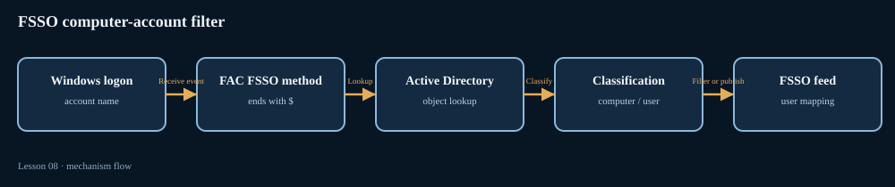

FortiPAM configuration backup/restore: encrypted credentials, omitted logs and cross-platform migration boundary
Primary Fortinet source: https://docs.fortinet.com/document/fortipam/1.9.0/administration-guide/290896/backup · Supporting guide/release source · Community scenario (scenario evidence only)
A configuration backup is not a complete system image
FortiPAM's configuration file contains system settings, user information and secret data. It is therefore sensitive material and must be protected like a credential vault. FortiPAM supports a manual backup from the administrator menu and scheduled/automatic backups to FTP, SFTP, HTTP or HTTPS servers. The important boundary is what the backup does not contain: System Events, secret logs and session videos are excluded from the configuration backup file. Restoring a configuration is not the same as restoring every audit artifact or recording.
FortiPAM 1.9 documents manual backup and remote automated backup under System > Backup. Automated backups can be time-triggered or change-triggered. A change-triggered schedule checks the configuration at the configured interval and sends a new backup when it detects a change. A backup that is too old increases the amount of configuration change and credential rotation that can be lost during recovery.
Credential freshness and maintenance mode
The Administration Guide warns that a secret password or key in a backup may not be the most recent one. If a password changer runs after the backup, the target system may already have a newer credential than the stored configuration. For a controlled backup, Fortinet recommends enabling maintenance mode first so that no password changer executes, then manually triggering the configuration backup. This protects the backup operation from a concurrent FortiPAM password-rotation transaction.
When private-data-encryption is enabled, the encryption key is a dependency of the restore process. Fortinet's 1.9 example shows that the same 32-hexadecimal-number key must be enabled and accepted on the replacement or factory-reset appliance before restoring the configuration. If the key is not set first, the configuration may load with errors and previously encrypted passwords may not be recovered. The guide recommends reviewing diagnose debug config-error-log read when the system reports configuration errors during startup.
Restore transaction and data completeness
Restoring a backup replaces the in-use configuration and can discard changes made after the backup. Active sessions end and must be restarted. If the backup was encrypted, the restore operator must supply the encryption password. After a restore, validate the license, users, secrets, target connectivity, password changer state, and private-data-encryption status. If session videos or secret logs are required for an investigation, retrieve them from their separate storage path; they are not embedded in the configuration backup.
Remote video storage is a separate subsystem. FortiPAM stores session videos locally first and can move older or expired videos to an SFTP server when the configured threshold or retention duration is reached. This feature requires Video Storage Mode Rolling; in Stop mode, remote video backup is not supported. Once moved to remote storage, the video cannot be played back directly in FortiPAM. Do not confuse remote video storage with the configuration backup file.
Scenario: cross-platform migration
A Fortinet Community article dated November 12, 2026 states that cross-platform FortiPAM configuration migration is not supported through an official migration procedure and that FortiConverter does not support it. The post offers general technical considerations, but those steps are community guidance, not an officially supported migration workflow. A valid configuration backup is useful for recovery on a compatible platform, but it does not guarantee that a backup is portable across different appliance, VM and cloud platform identifiers.
For a platform change, confirm product type, firmware compatibility, encryption settings, interface/routing/VIP/HA differences and licensing with Fortinet before production cutover. Preserve the original backup and audit/video exports separately. A successful restore message proves that a configuration was accepted; it does not prove every secret credential, license entitlement, network interface or recording is operational.
Mechanism diagram
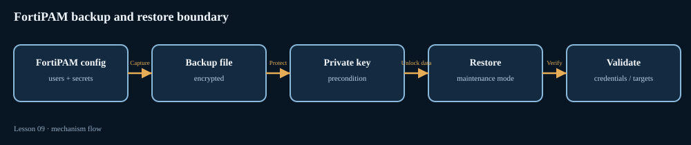

Windows Agent native XML transfer: Collector parsing and custom-parser migration
Primary Fortinet source: https://docs.fortinet.com/document/fortisiem/7.3.4/user-guide/843118/windows-agent-releases · Supporting guide/release source
Why the event representation changed
FortiSIEM Windows Agent 7.1.4 changed how Windows event logs are transferred. Instead of formatting every event into the previous FortiSIEM attribute/value string, the agent sends the native Windows XML representation for Security, System, Application and Forwarded Events. The Collector uses WinOSXmlParser to parse event attributes directly from the XML fields. This moves parsing work from the Windows endpoint to the Collector: agent CPU usage decreases, while Collector CPU usage increases slightly. Fortinet reported no significant Collector load increase in its testing.
The change is more than a display-format update. Custom parsers written for the previous flat attribute/value representation can stop extracting fields when the agent begins sending XML. A parser may still receive the event and show a raw message while failing to populate attributes used by rules, reports or incident correlation. That creates a deceptive partial-success condition: ingestion is alive, but normalized event content is incomplete.
Upgrade sequencing
Fortinet explicitly says user-written custom Windows parsers must be upgraded to parse XML fields before upgrading the Windows Agent. Use the WinOSXmlParser parsing logic as the reference for the new representation. Do not upgrade a large endpoint population first and then discover that custom parser content still expects the old key/value structure. Test representative Security, System, Application and Forwarded Event records in a staging Collector, update the parser, and only then roll out the agent change.
Windows Agent 7.1.5 also fixed cases where Windows System and Application logs contained empty Message nodes. The XML parser was improved to handle all Event logs and produce attributes comparable to the Windows OMI parser. Fortinet notes that FortiSIEM 7.1.x deployments need Content Update 606 to receive that fix. Version matters: verify the agent build and content update level rather than assuming that a newer Collector automatically includes every parser correction.
What to inspect when fields disappear
Start at the Collector. Confirm that the event arrives, identify whether the raw payload is XML, and inspect whether WinOSXmlParser produces the expected event ID, provider, computer, time and event-data attributes. If raw XML is present but parsed fields are absent, investigate parser/content version and custom parser precedence before blaming Windows Event Log forwarding. If no event arrives at all, move upstream to agent service, event channel subscription and Collector connectivity; the XML format change cannot explain a transport failure by itself.
Compare one event before and after the agent upgrade. The new payload includes the native Event XML structure with System and EventData sections. Custom parsers should extract values from named XML nodes rather than depend on the old bracketed attribute/value sequence. Validate both common fields and nested event data; a parser that extracts EventID but loses SubjectUserName or ProcessName is not fully migrated.
Capacity and operational implications
The architecture shifts parsing CPU from endpoints to Collectors. When many Windows agents are upgraded together, monitor Collector CPU and event-processing lag as well as endpoint CPU. Do not size a Collector only from the pre-upgrade agent load profile. Keep custom parser changes version-controlled and deployed consistently to every Collector that can receive the events. A single healthy Collector does not prove that another Collector has the same parser package.
The source material describes this behavior as a 7.1.4-era change and carries forward into later user-guide versions. The current FortiSIEM 7.5.1 Windows Agent Releases guide retains the 7.1.4 XML change in its version history and separately documents the 7.5.0 Headless Windows Agent. Do not confuse that headless-agent feature with the XML parser transition. Verify the installed Windows Agent and content package versions before applying the historical upgrade notes verbatim. The key invariant remains: the XML schema is the parser contract, and custom parser compatibility must be validated before agent rollout.
Mechanism diagram
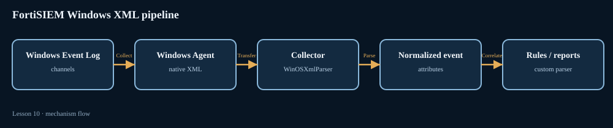

Bandwidth control on IPsec agent tunnels: policy matching, shared/per-IP profiles and policing
Primary Fortinet source: https://docs.fortinet.com/document/fortisase/26.1.107/feature-administration-guide/543849 · Supporting guide/release source
Traffic shaping model
FortiSASE bandwidth control provides bandwidth limits for Internet access and private access traffic by combining bandwidth profiles with bandwidth-control policies. The documented enforcement model is policing: when traffic exceeds the configured limit, packets are dropped. It is not a promise that excess traffic will be queued and smoothed. That distinction changes how users experience an over-limit flow and how an engineer interprets retransmissions, jitter and throughput.
Bandwidth control applies only to IPsec agent-tunnel traffic that matches a bandwidth-control policy. It does not automatically shape every packet that happens to traverse a Security PoP. The policy first identifies the traffic; the selected profile then applies the rate behavior. This separation lets an administrator build shared or per-IP profiles and reuse them across different matching rules.
Policy match and traffic direction
A bandwidth-control policy can match traffic using source/destination IP, user or user group, service, application, URL category, schedule and traffic type. The documented traffic types distinguish Internet access initiated from remote agent tunnels, traffic from remote users to private-access hubs, and traffic from private-access hubs toward remote users. That direction is important when diagnosing a one-way performance complaint.
Shared profiles apply in the source-to-destination direction. To limit the reverse direction, enable Reverse direction of shared profile in the policy. Per-IP profiles apply in both directions for each IP. A per-IP profile is therefore not interchangeable with a shared profile when the requirement is to cap the total aggregate rate for a whole user group. Choose the profile type that matches the desired fairness and aggregate behavior.
Configuration sequence and prerequisites
Create a shared profile, a per-IP profile, or both. Then create a bandwidth-control policy, specify the matching conditions and select the profile to apply. Policies are evaluated top-down, so put more granular rules above broad catch-all rules. The predefined Implicit Medium Control policy matches all traffic types with a Medium-priority shared profile; it cannot be edited or deleted. Account for it when reviewing effective policy order.
If the policy matches an Application Control entry, an Application Control profile must also be configured in a policy to identify that application. If it matches a URL category, a Web Filter profile must be configured to classify the URL category. A bandwidth rule cannot match an application or URL category that the inspection path does not identify.
Operational diagnosis
For a user who reports that a video or file transfer stalls, first confirm that traffic is using an IPsec agent tunnel and matches the intended bandwidth-control policy. Then verify policy order, user/group, destination, service, schedule and traffic type. Inspect the selected profile and determine whether the limit applies in source-to-destination direction, reverse direction or both. If the application criterion is not being recognized, verify the associated Application Control profile; if a URL category is not being recognized, verify Web Filter classification.
A rate-limit hit can appear as packet loss because policing drops excess packets. That is different from a tunnel health failure or an underlay MTU problem. Compare throughput and retransmissions while traffic is matched against the profile; then test a controlled higher limit or alternate profile in a change window. A pass with a higher rate supports a shaping diagnosis, but does not prove the underlying ISP path has no congestion.
Mechanism diagram
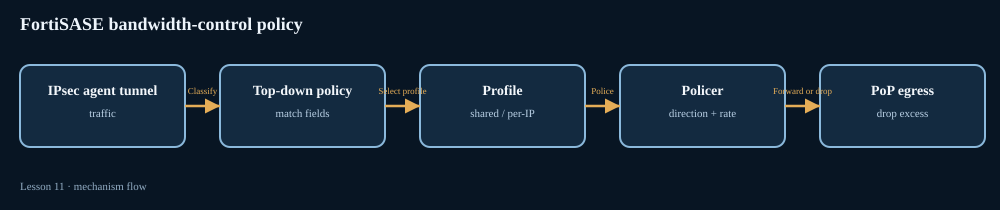

Underlay-bandwidth steering: inbandwidth, outbandwidth and bibandwidth load balancing
Primary Fortinet source: https://docs.fortinet.com/document/fortigate/8.0.0/sd-wan-new-features/102595/sd-wan-underlay-bandwidth-steers-traffic · Supporting guide/release source
Why distinguish underlay from overlay capacity
FortiOS 8.0 adds a bandwidth-type selector for SD-WAN load-balance services. The decision can be based on available bandwidth of an individual overlay or on the shared underlay that carries one or more overlays. This matters in hub-and-spoke designs where several IPsec tunnels share a physical WAN circuit. If each overlay is treated as though it owns the entire physical circuit, a load-balancing decision can overestimate capacity available to a new flow.
The feature is used with a load-balance service and bandwidth-oriented hash modes. The service still selects among members that are eligible under the configured service and health conditions; the new setting changes which bandwidth measurement is used to compare them.
Hash modes and direction
The documented hash modes are inbandwidth, outbandwidth and bibandwidth. Inbound mode distributes traffic to a selected interface with the most available incoming bandwidth. Outbound mode uses the most available outgoing bandwidth. Bidirectional mode considers both incoming and outgoing available bandwidth. The service must have load-balance enabled for these modes to be available.
The new bandwidth-type setting selects overlay or underlay; overlay is the default. Underlay mode makes the service refer to available bandwidth of the shared physical underlay. Example configuration:
config system sdwan
config service
edit 1
set load-balance enable
set hash-mode bibandwidth
set bandwidth-type underlay
next
end
endEstimated upstream and downstream bandwidth should be configured for underlay and overlay interfaces. The guide's example uses four overlays split across two physical WAN ports. Two overlays share port1 and two share port2. With bidirectional underlay bandwidth, overlays on the underlay with greater available capacity are preferred. Two tunnels on one physical circuit are not treated as two independent full-capacity WAN links.
Verification and interpretation
Use diagnose sys sdwan service4 to inspect the service's mode, members, health and calculated bandwidth values. The guide's example output shows each overlay member, its alive/SLA state and a bibandwidth value. This proves which members were eligible and what bandwidth value the steering logic used at that moment. It does not prove actual application throughput, guarantee a fixed share of traffic, or replace end-to-end performance testing.
If traffic continues to use an overlay on a more congested underlay, check that the service is in load-balance mode, that the intended hash mode is selected, and that bandwidth-type underlay is applied to the correct service. Then validate upstream/downstream bandwidth estimates and the physical mapping of each overlay to its underlay. A wrong interface association makes a correct algorithm act on the wrong shared-capacity group.
Design caveats
Do not confuse underlay steering with SLA health. Health checks determine whether a member is eligible; bandwidth mode ranks eligible members using configured/observed available bandwidth. A member can be alive but less attractive because its shared underlay has less capacity. Conversely, a high bandwidth value does not override a failed SLA. When two candidates have nearly identical values, inspect the service's tie-break behavior and configured member order rather than assuming perfect round-robin distribution.
Use underlay bandwidth when the bottleneck is the physical circuit shared by several overlays. Use overlay bandwidth when each tunnel's capacity is the relevant constraint. The correct choice depends on where capacity is actually shared in the topology.
Mechanism diagram
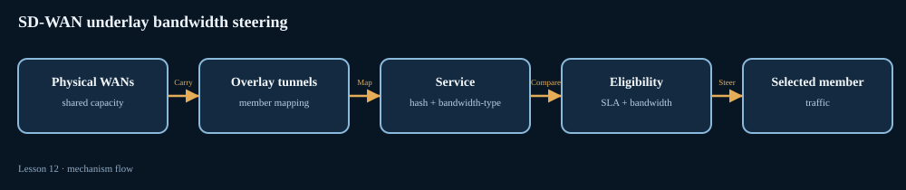

50-question graded engineering examination
Choose one answer per question, then submit. The score and all four choice-specific explanations are revealed after grading.
Research limitations and source policy
Community/KB articles are scenario sources only; all primary lessons link to Fortinet administration, configuration, deployment or release documentation. The November 12 FortiPAM cross-platform migration post is used only to frame the backup/restore portability boundary; the primary technical lesson comes from the FortiPAM 1.9 Backup and Restore documentation. No competitor-specific product coverage or commands are included.
FortiSIEM's Windows Agent XML behavior originated in the 7.1.4 release and is carried in later user-guide material. Verify the installed Windows Agent and content package versions before applying the historical upgrade notes to a 7.5 deployment.
Generated November 13, 2026 at 08:54 PST. The run remains PARTIAL until public Pages reachability and blocked documentation page access can be independently verified. This does not suppress the published GitHub report.